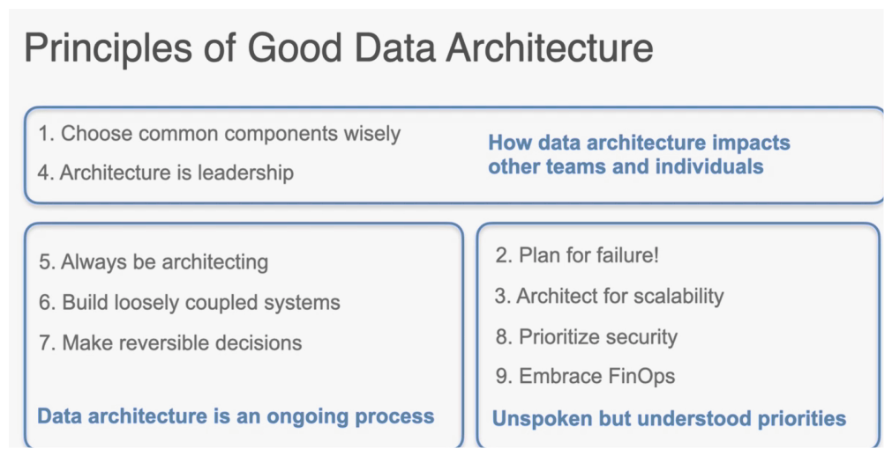
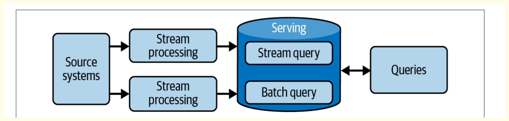
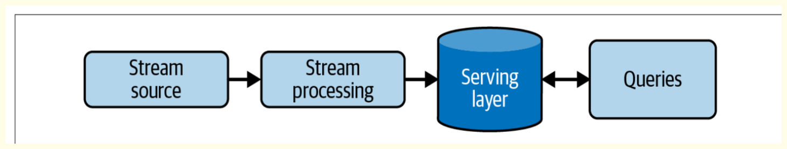
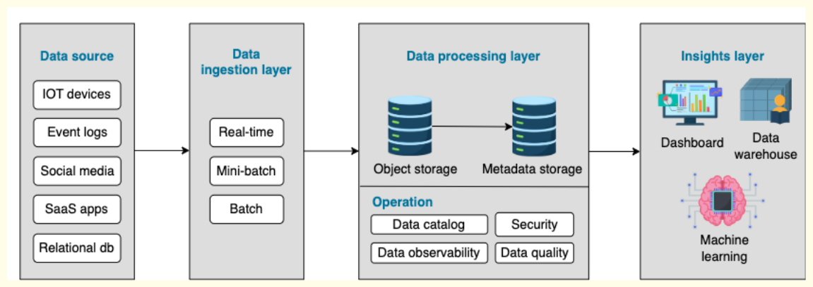
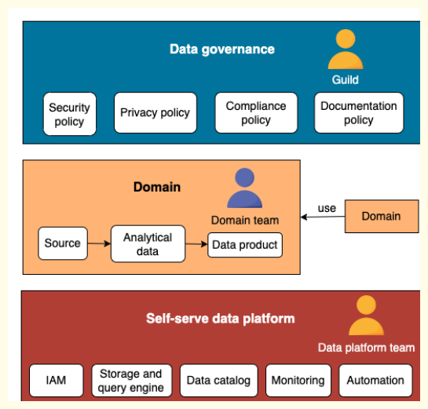

DE Architecture & Design
Cloud data architecture, by design, handles the ingestion, transformation, and analysis of data that is too large or complex for traditional data architectures.

Patterns of Good Cloud Data Architecture#
Let's learn about 5 principles for cloud-native data architecture that are useful for designing and operating reliable, cost-effective and efficient systems in the cloud.
Cloud offers incredible capabilities, but without deliberate design decisions, the architecture can become fragile, expensive, and challenging to maintain. Most cloud environments have not just one application but several technologies that need to be integrated.
The overarching goal of cloud architecture is to connect the dots to provide customers with a valuable online platform.
5 cloud-native architecture principles#
This is essential for creating a good design:
-
Reliable: The system should continue to work correctly regardless of system faults or human errors.
-
Efficient: The system must use computing resources efficiently to meet system requirements and maintain efficiency as the business grows.
-
Maintainable: The world is fluid. Good data architecture should be able to respond to changes within the business and new technologies to unlock more possibilities in the future.
-
Cost-optimized: The system should leverage various payment options to achieve cost efficiency.
-
Secure: The system should be hardened to avoid insider attacks.
Principle 1: Have an automation mindset#
Automation has always been good practice for software systems. In traditional environments, automation refers to building, testing, and deploying software through continuous integration/continuous delivery (CI/CD) pipelines.
A good cloud architecture takes a step ahead by automating the infrastructure as well as the internal components.
The five common areas for automation are shown below:
- Software
Software has been the most common area for automation regardless of the environment. Automation happens throughout the software's life cycle, from coding and deployment to maintenance and updates.
- Infrastructure
In the cloud, we can apply the same engineering principles we use for applications to the entire environment. This implies the ability to create and manage infrastructure through code.
Note
Infrastructure as Code (IaC) is a process that enables us to manage infrastructure provisioning and configuration in the same way as we handle application code.
Example
we first provision a VM in the dev environment and then decide to create the same one in the production environment.
Provisioning a server manually through a graphic interface often leads to mistakes.
IaC means storing infrastructure configurations in a version-control environment and benefiting from CI/CD pipelines to ensure consistency across environments.
- Autoscaling
The world is fluctuating, and a reliable system must handle the fluctuation in the load accordingly. Autoscaling helps the applications handle traffic increases and reduce costs when the demand is low without disrupting business operations.
- Recovery
According to Google SRE philosophy, building a system with 100% availability is almost impossible and unnecessary. The team should, instead, embrace the risk and develop mechanisms to allow systems to recover from the failure quickly.
Tip
Automatic recovery works by monitoring workloads for key indicators and triggering operations when specific thresholds are reached.
Example
In the event of full memory or disk, the cloud will automatically request more resources and scale the system vertically, instead of just throwing an error and disrupting the system.
- Backup
A backup strategy guarantees the business won't get interrupted during system failure, outage, data corruption, or natural disaster. Cloud backup operates by copying and storing data in a different physical location.
Principle 2: Outsource with caution#
Most cloud providers offer different abstract levels of services, namely IaaS, PaaS, and SaaS. Their ever-growing features help us offload day-to-day management to the vendors. However, some organizations are concerned with giving providers access to their internal data for security reasons.
Warning
The decision of whether or not to use managed services comes down to operational overhead and security.
Tip
The best practice is to find a cloud provider with a high reputation, express our concerns, and find a solution together. Even if the provider can't solve the problem immediately, the discussion might open the door to future possibilities.
Principle 3: Keep an eye on the cost#
Cost control isn’t a prominent concern in traditional architecture because the assets and costs are pretty much fixed. However, in the cloud, the cost can be highly dynamic, and the team might surprisingly end up with a high bill.
Warning
Implementing cloud financial management is vital, and the organization must allocate time and resources to build knowledge around it and share the best practices with the teams.
Fortunately, most cloud providers offer a centralized cost-monitoring tool that helps the team analyze and optimize the costs.
A few quick wins on saving the cost:
-
Only pay what you need. Turn off stale servers and delete stale data.
-
Enable table expiration on temporary data so they won't cost money after the expiration date.
-
Maximize utilization. Implement efficient design to ensure high utilization of the underlying hardware.
-
Query optimization. Learn different query optimization strategies such as incremental load, partitioning, and clustering.
Principle 4: Embrace changes#
The world is constantly evolving, and that's true for cloud architecture. As the business changes, the landscape of systems also needs to change. Good architecture doesn't stay in the existing state forever. Instead, they are very agile and can respond to business changes and adapt to them with the least effort.
Example changes in cloud architecture, as below
- Migrate Database
- Switch Vendor
- Migrate from batch to realtime stream processing
- Upgrade Services
- Adapt to high volume or low volume.
Principle 5: Do not neglect security#
Last but not least, implementing a strong identity foundation becomes a huge responsibility of the data team.
Tip
Traditional architectures place a lot of faith in perimeter security, crudely a hardened network perimeter with "trusted" things inside and "untrusted" things outside. Unfortunately, this approach has always been vulnerable to insider attackers, as well as external threats such as spear phishing.
In the cloud environment, all assets are connected to the outside world to some degree. Zero Trust architecture has been created to eliminate the risk from both outside and inside. Zero Trust is a strategy that secures an organization by eliminating implicit trust and validating every stage of digital interaction.
Another important concept in terms of security is the shared responsibility model. It divides security into the security of the cloud and security in the cloud. Most cloud providers are responsible for the security of the cloud, and it's the user's responsibility to design a custom security model for their applications. Users are responsible for managing sensitive data, internal access to data and services, and ensuring GDPR compliance.
LAMBDA Architecture#

In the “old days” (the early to mid-2010s), the popularity of working with streaming data exploded with the emergence of Kafka as a highly scalable message queue and frameworks such as Apache Storm and Samza for streaming/real-time analyt‐ ics. These technologies allowed companies to perform new types of analytics and modeling on large amounts of data, user aggregation and ranking, and product recommendations. Data engineers needed to figure out how to reconcile batch and streaming data into a single architecture. The Lambda architecture was one of the early popular responses to this problem.
In a Lambda architecture, you have systems operating independently of each other—batch, streaming, and serving. The source system is ideally immutable and append-only, sending data to two destinations for processing: stream and batch. In-stream processing intends to serve the data with the lowest possible latency in a “speed” layer, usually a NoSQL database. In the batch layer, data is processed and transformed in a system such as a data warehouse, creating precomputed and aggre‐ gated views of the data. The serving layer provides a combined view by aggregating query results from the two layers
Lambda architecture has its share of challenges and criticisms. Managing multiple systems with different codebases is as difficult as it sounds, creating error-prone systems with code and data that are extremely difficult to reconcile.
How it works: The system will dispatch all incoming data to batch and streaming layers. The batch layer will maintain an append-only primary dataset and precompute the batch views The streaming layer will only handle the most recent data to achieve low latency. Both batch and stream views are served in the serving layer to be queried.The result of merging batch and real-time results can answer any incoming query.
Challenges: Complexity and cost of running 2 parallel systems instead of 1. This approach often uses systems with different software ecosystems, making it challenging to replicate the business logic across the systems. It's also quite difficult to reconcile the outputs of 2 pipelines at the end.
KAPPA Architecture#

As a response to the shortcomings of Lambda architecture, Jay Kreps proposed an alternative called Kappa architecture. The central thesis is this: why not just use a stream-processing platform as the backbone for all data handling—inges‐ tion, storage, and serving? This facilitates a true event-based architecture. Real-time and batch processing can be applied seamlessly to the same data by reading the live event stream directly and replaying large chunks of data for batch processing.
Kappa architecture Though the original Kappa architecture article came out in 2014, we haven’t seen it widely adopted. There may be a couple of reasons for this. First, streaming itself is still a bit of a mystery for many companies; it’s easy to talk about, but harder than expected to execute. Second, Kappa architecture turns out to be complicated and expensive in practice. While some streaming systems can scale to huge data volumes, they are complex and expensive; batch storage and processing remain much more efficient and cost-effective for enormous historical datasets.
Advantages: In Kappa architecture, a streaming processing engine continuously processes real-time data and ingests it into long-term storage. When code changes occur, developers can recompute using the raw data stored in the event logs database.
Challenges: Streaming remains a challenge for many companies due to its complexity and most likely high cost and maintainance. Managing duplicates and preserving order, for instance, can be more challenging than batch processing. data replay is often trickier than it may seem.
Data Lake#
A data lake is a popular data architecture comparable, to a data warehouse. It’s a storage repository that holds a large amount of data, but unlike a data warehouse where data is structured, data in a data lake is in its raw format.
| Topic | Data Lake | Data Warehouse |
|---|---|---|
| Data Format | Store unstructured, semi-structured and structured data in its raw format. | Store only structured data after the transformation. |
| Schema | Schema-on-read: Schema is defined after data is stored. | Schema-on-write: Schema is predefined prior to when data is stored. |
| Usecase | Data exploration: Unstructured data opens more possibilities for analysis and ML algorithms, A landing place before loading data into a data warehouse. | Reporting: Reporting tools and dashboards prefer highly coherent data. |
| Data Quality | Data is in its raw format without cleaning, so data quality is not ensured. | Data is highly curated, resulting in higher data quality. |
| Cost | Both storage and operational costs are lower. | Storing data in the data warehouse is usually more expensive and time-consuming. |
The following graph illustrates the key components of a data lake

-
Ingestion layer: The ingestion layer collects raw data and loads them into the data lake. The raw data is not modified in this layer.
-
Processing layer: Data lake uses object storage to store data. Object storage stores data with metadata tags and a unique identifier, making searching and accessing data easier. Due to the variety and high volume of data, a data lake usually provides tools for features like data catalog, authentication, data quality, etc.
-
Insights layer: The insights layer is for clients to query the data from the data lake. Direct usage could be feeding the reporting tools, dashboards, or a data warehouse.
Data Mesh#
The term data mesh was coined by Zhamak Dehghani in 2019 and created the idea of domain-oriented decentralization for analytical data. Centrally managed architectures tend to create data bottlenecks and hold back analytics agility. On the other hand, completely decentralized architectures create silos and duplicates, making management across domains very difficult.
The data mesh architecture proposes distributed data ownership, allowing teams to own the entire life cycle of their domains and deliver quicker analyses.
The organization's IT team is responsible for the overall infrastructure, governance, and efficiency without owning any domain-related business.
Adopting data mesh requires some pretty cultural and organizational changes.
Currently, no template solutions for a data mesh, so many companies are still trying to figure out if it's a good fit for their organizations.

Each domain team is responsible for ingesting the operational data and building analytics models.
The domain team agrees with the rest on global policies to safely and efficiently interact with the other domains within the mesh.
A centralized data platform team builds infrastructures and tools for domain teams to build data products and perform analysis more effectively and quickly.
-
Principles
-
Domain ownership: Each domain team takes responsibility for the entire data life cycle.
-
Data as a product: Treat provided data as a high-quality product, like APIs to other domains.
-
Self-serve data platform: Build an effective data platform for domain teams to build data products quickly.
-
Federated governance: Standardize data policies to create a healthy data ecosystem for domain interoperability.
-